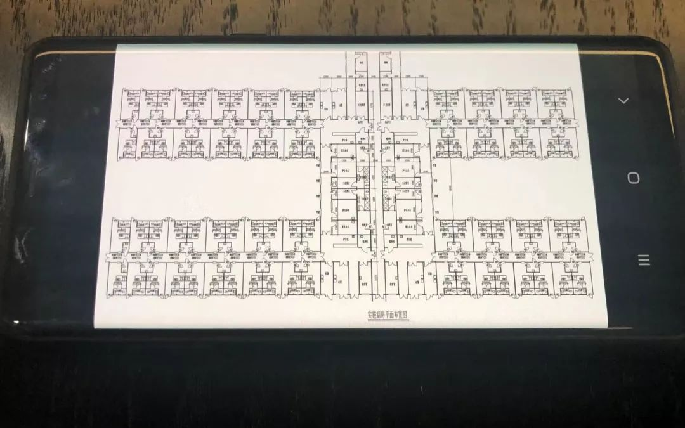

武汉紧急建设“小汤山医院”，当年如何做到SARS治愈率99%、1383名医护零感染？
原文链接 备份链接 武汉正在该市蔡甸区职工疗养院，紧急设计建设一个有1000个床位的临时医院，用于集中收治新型冠状病毒肺炎患者。临时医院计划在2月3日前投入使用。 这是学“小汤山模式”。2003年，北京7天建成小汤山医院，接收680名 …
***** *****
*****
*****黄锡璆表示，现在的技术条件比建设小汤山医院时好多了，他希望火神山医院的建设能够实现更好的使用效果。*****

火神山医院施工现场。受访者供图
文 | 新京报记者 韩沁珂
编辑｜王婧祎 校对 | 危卓
►本文约3208字，阅读全文约需6分钟
1月23日，武汉市政府要求中建三局等四家建设公司，按北京“小汤山”医院模式，在蔡甸区武汉职工疗养院附近建设新型冠状病毒肺炎集中隔离治疗点——武汉蔡甸火神山医院。建筑和设计单位将在小汤山医院建筑图纸基础上，针对选址和疫情特点进行优化设计。
2003年，在北京昌平区小汤山镇，也曾有这样一家医院在7天内拔地而起，以应对当时肆虐的SARS疫情。
“没想到小汤山医院的图纸还能再用一次，虽然我们不希望它再被使用。”1月24日，小汤山医院的设计者、中国机械工业集团有限公司中国中元国际工程有限公司（下称“中国中元”）医疗首席总建筑师黄锡璆对新京报记者表示，现在的技术条件比建设小汤山医院时好多了，他希望火神山医院的建设能够实现更好的使用效果。

黄锡璆和同事们在讨论火神山医院布局图。 新京报记者 韩沁珂 摄
随时提供技术支持
*** ***
***
1月24日上午，79岁的黄锡璆在工作人员搀扶下进到会议室，来不及喝水，一坐下就开始查看他们拿到的火神山医院布局图，和中元国际医疗建筑设计研究一院院长李辉等同事一起回忆小汤山医院的建设过程。这天是农历大年三十，办公楼里的人不多，值班人员都在来去匆匆的沟通着工作。
头一天中午，中元医疗建筑设计研究院院长许海涛接到通知，他们将作为技术支持方，为火神山医院的建设提供咨询建议。公司立刻成立应急指挥部和以黄锡璆为组长的技术专家组，小汤山医院曾经的设计团队时隔17年再次集结，当年的建设图纸也在第一时间被发到此次火神山医院的设计单位武汉中信建筑设计院。
1月23日，武汉市城建局成立建设指挥部，并于当日下午召开专题会议，计划于2月3日前建成建筑面积达2.5万平方米、可容纳1000张病床的专门医院。四家建设单位分别是中建三局、武汉建工、武汉市政、汉阳市政。
项目被高速推进。当晚，建设现场就开始了土地平整工作。晚上9点多，79岁的黄锡璆在北京的家里整理资料，他要把小汤山医院设计上还可以优化的环节逐一整理出来，发给李辉，请他转给武汉的设计团队。
黄锡璆所在的技术专家组，囊括了建筑、结构、给排水、医用气体、暖通、电气等各领域的教授级高工，将随时为武汉火神山医院提供技术支持。
公开信息显示，截至2020年1月25日10时，湖北省报告新型冠状病毒感染的肺炎确诊病例729例，死亡39例，已治愈出院32例。
武汉方面表示，为了解决现有医疗资源不足、进一步加大患者救治力度的需要，专门医院非建不可。
除了武汉，上海也已开启 “小汤山模式” 集中收治新型肺炎患者，在位于金山区的上海市公共卫生临床中心，设置新型冠状病毒肺炎集中隔离治疗点，确诊病患将全部转移到金山进行隔离、观察和救治。
可以生长的医院
**********
武汉火神山医院选址在武汉蔡甸区武汉职工疗养院，这里距离汉口火车站车程约40分钟，靠近后官湖湿地公园，远离闹市区，人口密度相对较低。
在黄锡璆看来，小汤山这样的应急医院选址，市政系统成熟、交通便利、周边人口稀少是最需要考虑的三点，“传染病医院更需要关注供电保障、排水、排气安全和对周边居民的影响。”
“建设小汤山医院时，我们没有任何经验，都需要摸索，而现在则有小汤山这个成功案例可以参考。”黄锡璆说，火神山医院可以沿用小汤山的设计图，但是也要根据当地环境和此次疫情特点做出优化调整。
和小汤山医院一样，正在建设的专门医院也将采用中轴对称的鱼骨状布局。标准化、模块化，根据需要可以不断延伸是这种布局的主要特点。
受访专家提供的资料显示，火神山医院将由多个H型模块排列而成，其中，沿中轴线布置办公区域和医护人员通道，每个中心模块负责4个护理单元，护理单元内安置两列病房。患者从病房外周进出病区，医护人员从中轴核心经层层更衣和卫生通过区进入病房进行检查、治疗和看护。这样的功能结构能够严格控制空气的洁净梯次，切实保障医护人员卫生安全，同时有效开展医疗救治工作。根据选址地形和现场已有设施，模块排列数量和每个护理单元的长度都可以进行调整。

小汤山医院平面图。 受访者供图
黄锡璆表示，从外部环境到内部使用上，需要特别注意医护人员和病人活动空间、交通路线的分区分流。“按照诊断流程进行医院布置，减少交叉，将最大限度地降低感染风险。”为保证医护人员的安全，当初的小汤山医院实施严格分区，病房为污染区、医护工作区为半污染区、医护办公区为半清洁区，医护人员值班休息区域为清洁区，医护工作实行单向通过式流程。医护人员进出污染区需经过两次卫生通过，即消毒两次。这样的功能模式非常有效地将危险感染源控制在最小范围。
在这样的设计方案下，每个护理单元都是独立的标准模块，一方面有利于同时施工，各单位可以独立建好自己的模块后集中拼接，尽量减少交叉作业；另一方面也可以在发生疫情恶化或失火等紧急情况时，将该单元彻底封闭，保全医院其他单元。
“小汤山医院每一列病房的材质都是不一样的，病房数量也不一样。” 黄锡璆回忆，当时有6家施工单位同时施工，每家施工单位能够提供的建设材料都不一样，李辉补充道：“只能有什么用什么，现在回想起来有些不可思议，居然都拼在一起了，还比较管用。”
小汤山医院也是在SARS疫情最严峻的时期动工的。当时，SARS确诊患者正在以每天上百例的速度快速增长，医护人员的感染数量也在持续增加。
由于情况紧急，黄锡璆所在设计团队在2003年4月23日接到通知后，连夜手画出设计草图。“没有第二种设计方案，没有时间。”他说到，能在第一时间想到鱼骨状结构还要得益于他对传染病医院设计的长期关注，以及之前与传染病医院北京佑安医院医护人员的讨论。
当年4月24日一早，设计团队进入施工工地，边画设计图边施工。受到场地和材料限制，每一段的设计图纸都有所不同，为了尽快出图，设计团队几乎是24小时接力画图。“设计团队有30多人，现场7000人等着我们的图，大家都很着急。”
“现在条件好多了”
**********
北京干燥，武汉湿润，这是两家应急医院在环境因素上最大的不同。
湿润的气候条件可能有利于病毒的生存和传播，也对医院的防水工作提出了更高的要求。“病区地面要有高差，防止积水。患者通道也不能露天，最好能加个遮雨棚。要是用电空调采暖，室内温度升高可能会滋生细菌，还要增加通风量。”一说起针对湿润环境的医院设计，黄锡璆就开始细数注意事项。
因场地有限，小汤山医院每个护理单元之间的距离仅有12米，他建议这个距离在火神山医院中扩大到18米到20米，以进一步降低感染风险。因时间限制，小汤山医院在清洗救护车的地方没来得及建起防止污水外溅的棚子，他认为火神山医院应该建起来。另外，由于与选址区域原有配电箱位置冲突，小汤山医院的医疗影像设备不得不安置在护理单元一侧，“按照诊断流程，放在进门的地方更合适。”
在完成小汤山医院项目后，“曾有很多地方来找我们要图纸，但没想到真的还能再用上。” 黄锡璆说。
在李辉看来，设计和建设的过程就是权衡和决策，设计图纸只是一部分，很多时候还需要当场根据实际情况做决策，这就涉及各部门的相互配合。
“没有时间犹豫，要做的就是用最小的代价解决当前的问题。” 李辉表示，应急医疗设施的建设也要遵循优先原则，“保证安全是首位的，好看和舒适度是次要的。”从结果来看，小汤山医院是成功的。
在短短的七天七夜里，小汤山奇迹般完成建设。在两个月内收治了全国七分之一的SARS患者，并实现了医护人员零感染。2003年6月20日，最后一批18名SARS患者康复出院，距离小汤山医院正式接治SARS患者只有50天。
“现在条件好多了。近年来，我们应对突发公共卫生事件的能力也有所提高，现在技术和团队都是成熟的，只要启动应急响应预案，就可以高效推进。” 李辉表示。
*洋葱话题*
*▼*
*你想对建设者们说什么？*
*后台回复关键词*****“洋葱君” ，加入读者群****
***推荐阅读***

68岁新型肺炎患者：最后一次见老伴是她被推往ICU

*********既然在看，就点一下吧****** *********
*********
原文链接 备份链接 武汉正在该市蔡甸区职工疗养院，紧急设计建设一个有1000个床位的临时医院，用于集中收治新型冠状病毒肺炎患者。临时医院计划在2月3日前投入使用。 这是学“小汤山模式”。2003年，北京7天建成小汤山医院，接收680名 …
原文链接 备份链接 图 / 上海捷诺生物官网 生产企业工人大多已经放假回家，厂家备货也不够充足。就算外面有支援调货过来，封城后也已经很难运送进来了。很多人想当然地以为这是国家供应的，其实它是按照市场采购流程走的，厂商自己要想办法完成配 …
原文链接 备份链接 正月十七。 又阴了。但天空还算明亮。我们依然在打听或在等待好消息。有人做了个视频，说如果钟南山讲哪天可以出门了，你们猜武汉会怎么样？然后是各种鸡鸭成群地向外飞奔，各种耀武扬威地出门派头，各种猖狂傲慢的走路姿态。原 …
原文链接 备份链接 回溯新型冠状病毒在武汉的蔓延过程， “超级传播者”的出现， 几乎是一种必然 1月21日，国家卫健委高级别专家组成员、香港大学微生物学系讲座教授袁国勇提出“超级传播者可能已经出现”，称当时公布的武汉15名被感染医护人员当 …
原文链接 备份链接 界面新闻记者 刘海川摄 记者 | 刘海川 王健 杨舒鸿吉 编辑 | 1 编者按：这是武汉三个场景下除夕夜的故事。透过他们，我们看见武汉的局部细节，看见平凡市民们的焦虑，疲惫，坚强和希望。新的一年已经到来，愿武汉与我 …